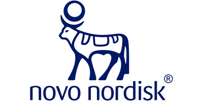
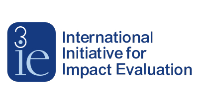
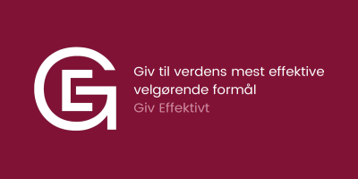
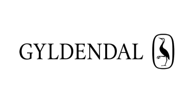

Professional experience include behavioral research, data analysis, writing, consulting and board work.

Clinical trial design & analysis
Data analysis | Project management | Quality in healthcare

Econometrics | Systematic review | Meta-analysis

Cost-effectiveness analysis | Evidence-based philanthropy
Behavioral psychology | Cultural evolution | Anthology editing
Bayesian statistics | Causal inference | Cultural & behavioral psychology
Popular science | Critical thinking | Conspiracy theories
Evolution & intelligence | Database building | Statistical analysis

Popular science | Poetic naturalism | Psychology of religion